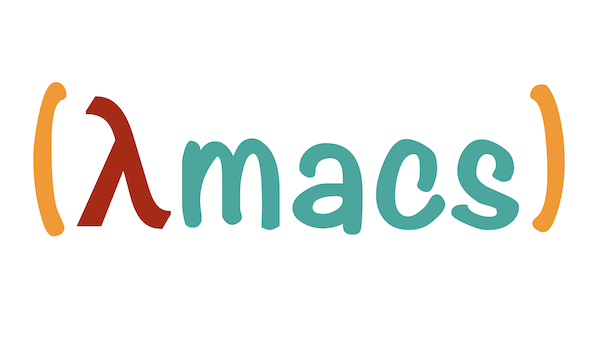

(λmacs)
(λmacs) is Emacs for Clojure development on macOS X.
Table of Contents
Intro
(λmacs) is Emacs for Clojure development on macOS X.

- Check documentation online.
- Check the code on Github.
Motivation
For a number of years I've been using Emacs as my primary/only IDE. I used a number of "distributions" readily available on internet such as emacs-live and Prelude of which I made my own extension Preludex, and I watched the birth of Spacemacs and the new challenger doom-emacs.
Over time each of these distributions grew larger and larger and it became hard to keep the configuration up-to-date but still minimal (just what you need).
So I decided to build my own out of the best pieces of all of them.
If you are new to Emacs, it is probably best if you start with one of the more popular distributions so that you get enough community support. If only you need is to develop Clojure, and have enough tooling support feel free to use my configuration.
Installation
- Download and install Emacs For Mac OS X if you don't have it yet!
- Backup your previous installation:
mv ~/.emacs.d ~/.emacs.d-backup
- Clone
(λmacs)
git clone https://github.com/BrunoBonacci/lambdamacs.git ~/.emacs.d
- Install platform tools
Some platform tools are used to enhance the user experience and to support some features.
brew install the_silver_searcher aspell
- That's all, start hacking!
If you want you can customize your configuration (see next section).
Configuration
There are a number of configurable options to setup (λmacs) just
right for your environment.
- First configure your name and email:
;; add your name and email address
(setq user-full-name "Firstname Lastname"
user-mail-address "your-email@email.org")
- Install a nice looking font and pick a size:
Here some suggestions:
(setq lambdamacs/default-font "Roboto Mono Thin for Powerline") (setq lambdamacs/default-font-size 150)
- Select your favorite theme
There are a number a themes already installed see the full list and see theme screenshots. I'd recommend to pick your favorite as default and use a light theme as alternative. It can be useful sometimes to switch to the alternative for example if you make a presentation. Light themes work better with projectors.
(setq lambdamacs/default-theme 'doom-moonlight) (setq lambdamacs/alternative-theme 'doom-one-light)
You can switch between themes by typing M-x switch-theme-to-alternative
and switch back to the default theme with M-x switch-theme-to-default
Packages installed
| Package | Purpose |
|---|---|
TODO: WSD |
WebSequenceDiagrams |
TODO: bookmarks |
Code bookmarks |
TODO: restclient |
Turn simple text buffer into HTTP REST calls |
TODO: yas-snippet |
Code snippets |
cider |
CIDER the best IDE for Clojude development |
clj-refactor |
Cider companion for refactoring |
doom-modeline |
cool minimalistic modeline |
doom-theme |
a collection of well curated themes |
forge |
Magit extension for Pull Requests and Issues |
magit |
Git controls |
markdown |
Markdown mode support with TOC and Live preview (via flymd) |
multiple-cursors |
Multple cursors for editing |
outline-presentation |
Use org-mode to make a presentation |
paredit |
Can't develop Clojure without structural editing |
prodigy |
Local process management |
projectile |
Useful functions for working with projecs |
sticky-windows |
Stick windows in place (no auto close) |
switch-java |
Enables to select the JVM version while inside emacs |
treemacs |
Project tree navigation |
undo-tree |
Powerful multi-state undo |
wgrep |
Editable search buffers |
witespace |
To clean trailing whitespaces in the code |
- TODO:
[ ]bookmarks[ ]restclient[ ]yas-snippet[ ]flycheck[ ]flyspell[ ]eldoc?[ ]paradox[ ]command-log[ ]winmode?? save windows / toggle-zoom[ ]code rtf pygments
Keybindings
Get involved
Contribution
This is my personal setup, I don't mind you using it and I'd appreciate feedbacks and suggestions on how to improve it! Issue a PR, and if it works for me, I'll merge it!
References
The code in this repo has is the sum of my personal experience and the following references:
- Emacs Prelude - A great Emacs distribution
- @bbastov .emacs.d - Bozhidar's Emacs config
- emacs-live - Another Emacs distribution
- Get Things Done with Emacs - From which I took the beautiful CSS (thanks) for org-mode
Thank you to all of you!
License
Copyright © 2020 Bruno Bonacci and contributors. Distributed under the GNU General Public License, version 3.